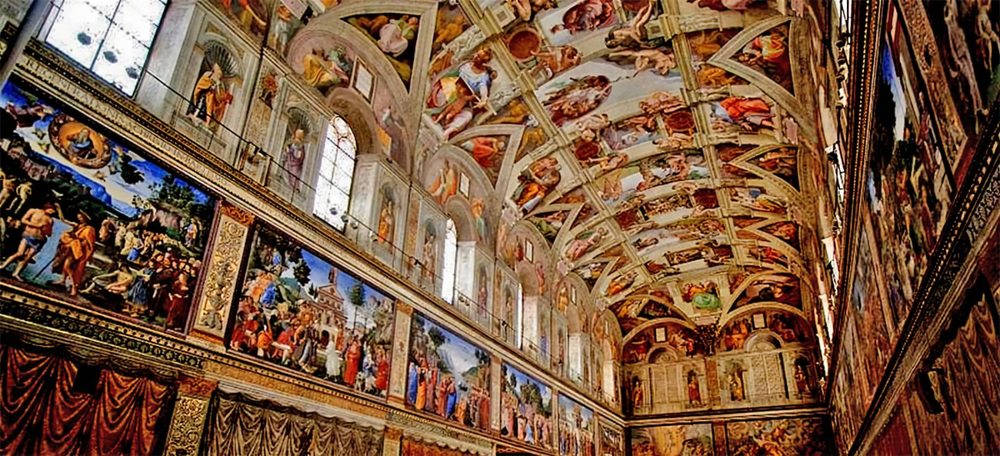
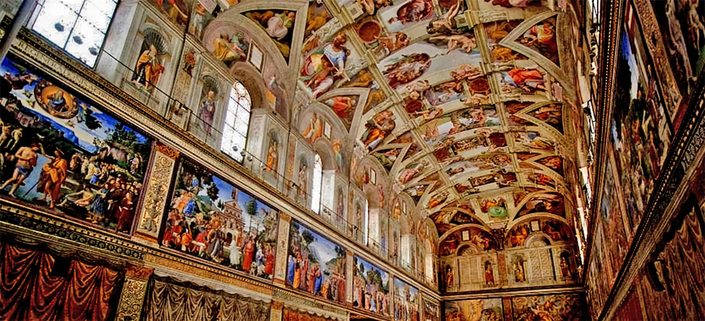

Destinos en Italia
Coliseo de Roma
La construcción del Coliseo comenzó en el año 70 (siglo I d. C.) durante el mandato del primer emperador de la dinastía Flavia, Vespasiano. La estructura fue plaza de juegos y espectáculos sangrientos que entretenían al público, como las peleas entre gladiadores, los enfrentamientos entre animales y las ejecuciones entre prisioneros, el lugar histórico tiene un edificio ovalado de 57 metros de altura, 156 de ancho y 189 de largo. Una construcción muy moderna para la época.


Torre de Pisa
Icono de la hermosa ciudad de Pisa y una referencia de Italia y de las estructuras más curiosas del mundo, es la torre campanario de la Catedral de Pisa con 294 escalones ubicada en la Plaza del Duomo, en la región italiana de La Toscana. Tiene 7 campanas, cada una corresponde con una nota musical. La más grande de ellas data de 1655.


La Capilla Sixtina y otros museos del Vaticano (Roma)
En Roma podrás conocer uno de los lugares turísticos de Italia: los Museos del Vaticano, entre ellos, la Capilla Sixtina. Estos museos son propiedad de la Iglesia católica. Un conjunto de galerías con bellezas arquitectónicas de la pintura, escultura y del arte en general, la Capilla Sixtina se construyó entre los años 1471 y 1484, es la sede del cónclave para escoger al sucesor de Pedro. Se terminó en el papado de Sixto IV y por ello su nombre. Podrás ver magníficas arquitecturas y las hermosas pinturas que narran la vida de Moisés y Jesús, frescos elaborados con la participación de pintores renacentistas como Sandro Botticelli, Domenico Ghirlandaio y Perugino Pinturicchio.
.jpg) 
